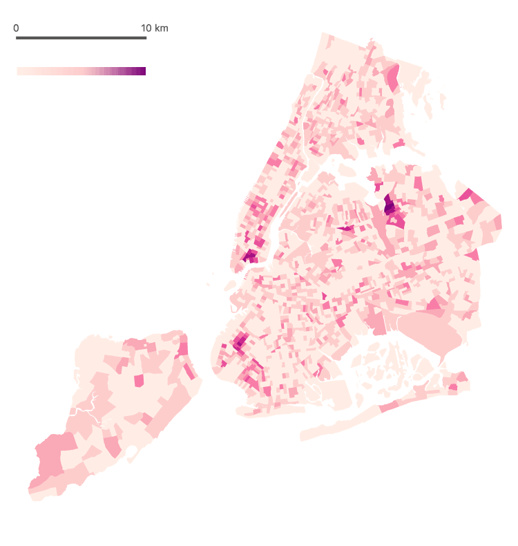

If you can only think of General Tso Chicken when if comes to Chinese food, think again!
It is not hard to notice that the newcomer Chinese restaurants around almost every block of the city. The influx of native Chinese immigrants and international Chinese student has completely changed the game. Chinese restaurants with Americanized Chinese food are losing their market share, while the city paves path for authentic Chinese food.
So if you are on a food hunting for Chinese food, or if you simply wnat to known more about this somewhat mysterious cusiine, or you are just bored and run out of things to do in the city, might as well take a look at the following density map of all the NYC neighborhood and explore where you can find Chinese food.
Distribution of Chinese restaurants
Distribution of Chinese restaurants

Distribution of Chinese restaurants
See for yourself!
There are two more areas with quite populated Chinese restaurants besides Flushing- the one near the Lower East Side and the one on the Eighth Avenue in Brooklyn.
More specifically, at downtown Manhattan, there is the famous Chinatown with more than 60 Chinese restaurants in the area. No doubt you can find some decent Chinese food there, and the price is very affordable too. The majority of the restaurants there are old school Canton styles. Although sadly Chinatown is shrinking, but the number of Chinese restaurants is actually growing to accomadate the high demands.
The Sunset Park area in Brooklyn also has many Chinese restaurants, and here lays a less well-knwon but still legit Chinatown. A mix of new and old, you could find various branches of Chinese cuisine here.
Finally, let's talk about Flushing. Where to begin? So many exisiting Chinese restaurants and many to come, and chances are your stomach capacity is far from matching up the abundence of delicious Chinese food there. The Chinese restaurants in Flushing are mostly more in style with the lastest food trends in China.